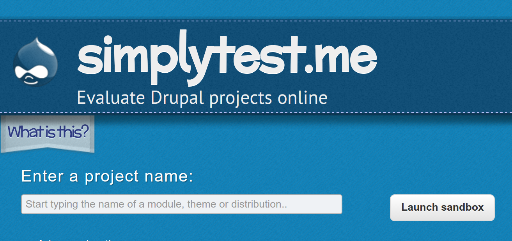
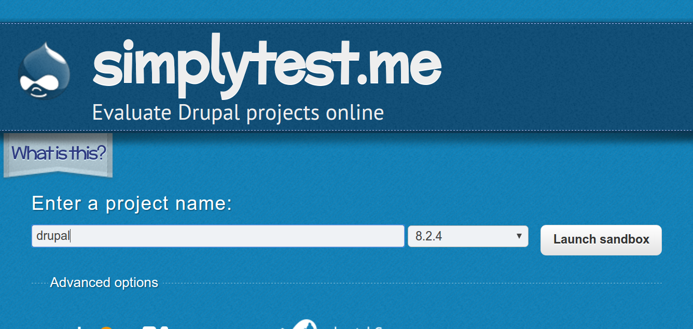
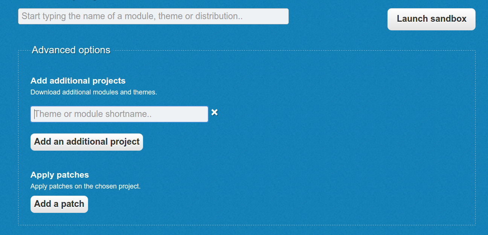
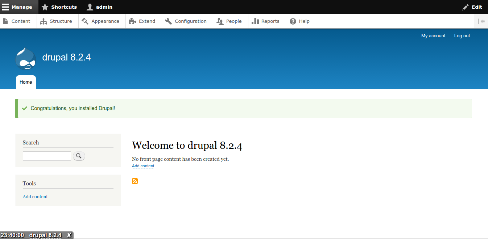

SIMPLYTEST.ME
SimplyTest.Me is a Drupal project evaluating tool made by Patrick Drotleff. It allows to test any Drupal distribution, theme or module without actually setting up an entire drupal installation locally. It let you specify which Drupal core version or distribution you want setup, which modules you want to install and which patch is to be applied.
But, this is just a temporary sandbox that you can use to test out a module, a patch or a Drupal distribution, and it will be automatically destroyed after 30 minutes or more (depending on whether you're a registered site user or not). So don't use this is for long-term development - for that, you should definitely set up your own Drupal installation locally!
HOW TO USE SIMPLYTEST.ME ?
1. Go to http://simplytest.me and type in the name of the project that is to be installed.

2. Click on the version or distribution if such an option appear.

3. In the Advanced options, expand the options to load additional modules, themes or patches to your Drupal core/distribution and click on "Launch Sandbox".

4. The website will taking a couple of minutes to complete the installion process. During installation it will ask for certain question so it is preferred to just click "Save and Continue" as the environment is temporary.

WHY TO USE SIMPLYTEST.ME ?
- HANDLING
The sandboxes can be set-up very easily without any prior-knowledge.
- SPEED
With simplytest.me install Drupal environment in a couple of minutes.
- SHARING
The links of the sandboxes can be shared with others and they can also work on the sandbox from anywhere in the world (just share the url of the sandbox).
- RELIABILITY
Install and work on sandboxes online from anywhere in the world anytime.
- TESTING
Test patches with simplytest.me by just adding the link to the patch in the advanced options while the installation process.